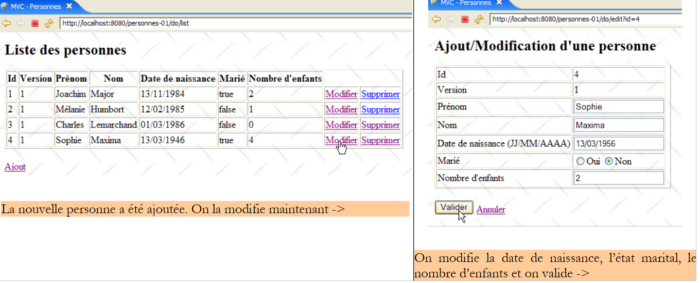
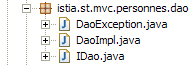
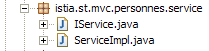
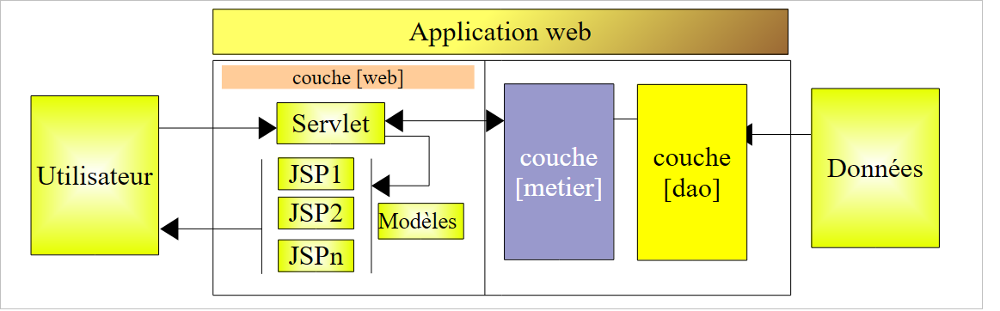
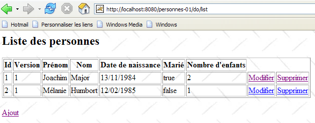

14. 三层架构中的 Web 应用程序 MVC – 示例 1
14.1. 概述
迄今为止，我们仅使用了一些教学性质的示例。出于教学目的，这些示例必须保持简单。现在，我们将介绍一个基础但比之前所有示例都更复杂的应用程序。该应用程序的特点在于它使用了三层架构的三个层：

若读者已遗忘相关原理，建议重温第4段中关于三层架构下Web应用程序MVC的设计原则。
我们将编写的Web应用程序将通过以下四项操作来管理一个人员组：
- 列出组内人员
- 向组中添加人员
- 修改组内成员
- 从组中删除成员
这四项基本操作与数据库表中的操作相一致。我们将编写该应用程序的两个版本：
- 在版本 1 中，[dao] 层将不使用数据库。 组内人员将存储在一个简单的 [ArrayList] 对象中，该对象由 [dao] 层在内部管理。这将使读者能够在不受数据库限制的情况下测试该应用程序。
- 在第 2 版中，我们将把人员组放入数据库表中。我们将展示这一操作不会对第 1 版的 Web 层产生影响，该层将保持不变。
以下 的屏幕截图展示了应用程序与用户交互的页面。



 |
 |
14.2. Eclipse 项目
该应用程序的项目名为 [personnes-01]：

该项目涵盖了应用程序三层架构的三个层级：
 |
- [dao]层包含在[istia.st.mvc.personnes.dao]包中
- [metier] 或 [service] 层包含在 [istia.st.mvc.personnes.service] 包中
- 层 [web] 或 [ui] 包含在包 [istia.st.mvc.personnes.web] 中
- [istia.st.mvc.personnes.entites] 包包含不同层之间共享的对象
- [istia.st.mvc.personnes.tests] 包包含 [dao] 和 [service] 层的 JUnit 测试
我们将依次探讨 [dao]、[service] 和 [web] 这三个层。 由于篇幅过长且可能令读者感到乏味，除涉及新内容外，我们有时可能会略过部分解释。
14.3. 人员的表示
该应用程序管理一组人员。第14.1节的屏幕截图展示了个人的一些特征。从形式上讲，这些特征由类[Personne]表示：

类 [Personne] 如下所示：
- 一个人的身份通过以下信息进行识别：
- id：唯一标识个人的编号
- 姓：该人的姓
- 姓：该人的姓
- dateNaissance：其出生日期
- marie：其婚姻状况
- nbEnfants：子女数量
- 属性 [version] 是为满足应用程序需求而人工添加的属性。 从面向对象的角度来看，将该属性添加到 [Personne] 的派生类中无疑更为理想。该属性的需求在分析 Web 应用程序的使用场景时显现出来。其中一个场景如下：
在时间点 T1，用户 U1 进入对人员 P 的编辑界面。此时，子女数量为 0。 他将该数值改为1，但在提交修改前，用户U2进入同一人员P的编辑界面。由于U1尚未提交修改，U2看到的子女数量仍为0。 U2将人员P的姓名改为大写。随后，U1和U2按此顺序提交了修改。 最终生效的是 U2 的修改：姓名将转为大写，且子女数量仍为零，尽管 U1 认为自己已将其改为 1。
“人员版本”的概念有助于解决此问题。我们继续使用相同的用例：
在时间点 T1，用户 U1 进入对人员 P 的修改界面。此时，子女数量为 0，版本号为 V1。 他将子女数量改为1，但在提交修改前，用户U2开始编辑同一个人P。由于U1尚未提交修改， U2 看到子女数为 0，版本号为 V1。U2 将人员 P 的姓名改为大写。 随后，U1 和 U2 按此顺序提交了修改。在提交修改前，系统会验证修改人员 U1 是否持有与当前已记录人员 P 相同的版本。 因此其修改被接受，随后将该人员的版本号从 V1 更改为 V2，以记录该人员已发生变更。 在验证 U2 的修改时，我们会发现他持有人员 P 的版本 V1，而当前该人员的版本是 V2。 此时，我们可以告知用户U2，有人在他之前进行了操作，他必须基于人员P的新版本重新开始。他将照做，获取版本为V2的人员P（该人员现已有一名子女），将姓名转换为大写，并提交。 如果已保存的 P 仍处于版本 V2，则其修改将被接受。最终，U1 和 U2 所做的修改都将被保留，而在没有版本控制的使用场景中，其中一项修改会丢失。
- 第 32-40 行：一个能够初始化人员字段的构造函数。此处省略了字段 [version]。
- 第 43-51 行：一个构造函数，用于创建传入参数中该人的副本。此时将有两个内容相同但由两个不同指针引用的对象。
- 第 55 行：重定义方法 [toString]，使其返回一个字符串，该字符串表示该人的状态
14.4. [dao] 层
[dao] 层由以下类和接口组成：

- [IDao] 是 [dao] 层提供的接口
- [DaoImpl] 是该接口的实现，其中人员组被封装在 [ArrayList] 对象中
- [DaoException] 是一种由 [dao] 层抛出的未检查异常
接口 [IDao] 的定义如下：
- 该接口包含四个方法，用于对人员组执行以下四项操作：
- getAll：获取人员集合
- getOne：获取具有特定 id 值的人员
- saveOne：用于添加人员（id=-1）或修改现有人员（id ≠ -1）
- deleteOne：用于删除具有特定 id 的个人
[dao] 层可能会抛出异常。这些异常的类型为 [DaoException] ：
- 第 3 行：从 [RuntimeException] 派生的类 [DaoException] 属于不受控异常类型：编译器不强制要求我们在：
- 在调用可能抛出该异常的方法时，使用 try/catch 块来处理此类异常
- 在可能抛出该异常的方法签名中添加 "throws DaoException" 标记
这种技术使我们无需在 [IDao] 接口的方法中声明特定类型的异常。因此，任何抛出未受控异常的实现都是可接受的，从而为架构带来了灵活性。
- 第6行：一个错误代码。[dao]层将抛出各种异常，这些异常将通过不同的错误代码进行标识。这将使负责处理异常的层能够准确了解错误的来源，从而采取相应的措施。 还有其他方法可以达到相同的效果。其中一种是为每种可能的错误类型创建一个异常类型，例如 NomManquantException、PrenomManquantException、AgeIncorrectException 等。
- 第 13-16 行：构造函数，用于创建由错误代码和错误消息标识的异常。
- 第 8-10 行：该方法允许异常处理代码从中获取错误代码。
类 [DaoImpl] 实现了接口 [IDao]：
1 2 3 4 5 6 7 8 9 10 11 12 13 14 15 16 17 18 19 20 21 22 23 24 25 26 27 28 29 30 31 32 33 34 35 36 37 38 39 40 41 42 43 44 45 46 47 48 49 50 51 52 53 54 55 56 57 58 59 60 61 62 63 64 65 66 67 68 69 70 71 72 73 74 75 76 77 78 79 80 81 82 83 84 85 86 87 88 89 90 91 92 93 94 95 96 97 98 99 100 101 102 103 104 105 106 107 108 109 110 111 112 113 114 115 116 117 118 119 120 121 122 123 124 125 126 127 128 129 130 131 132 133 134 135 136 137 138 139 140 141 142 143 144 145 146 147 148 149 150 151 152 153 154 155 156 157 158 159 160 161 162 163 164 165 166 167 168 | |
我们仅概述该代码的主要内容。不过，我们将花些时间详细说明其中最棘手的部分。
- 第 13 行：[ArrayList] 对象将用于存储人员组
- 第 16 行：最后添加的人员的标识符。每次新增人员时，该标识符将递增 1。
[DaoImpl] 类将仅实例化一个实例。这被称为单例。Web 应用程序同时为多个用户提供服务。在某个时刻，Web 服务器会同时运行多个线程。这些线程共享单例：
- [dao] 层的单例
- [service] 层的单例
- Web层中各个控制器、数据验证器等的实例
如果某个单例拥有私有字段，必须立即思考其存在的理由。这些字段是否合理？因为它们将被不同线程共享。如果它们是只读的，且能在确信仅有一个活跃线程的时刻进行初始化，则不会造成问题。 通常我们都能找到这个时机。即 Web 应用程序启动时，但尚未开始为客户端提供服务。如果这些字段是读写兼有的，则必须对字段访问进行同步，否则将导致灾难性后果。我们在测试 [dao] 层时将对此问题进行说明。
- 类 [DaoImpl] 没有构造函数。因此将使用其默认构造函数。
- 第 19-38 行：在实例化 [dao] 层的单例时，将调用 [init] 方法。该方法创建了一个包含三人的列表。
- 第 41-43 行：实现了接口 [IDao] 中的方法 [getAll]。该方法返回人员列表的引用。
- 第 46-55 行：实现接口 [IDao] 中的方法 [getOne]。其参数为要查找的人员 ID。
要获取该人员，需调用第113-126行中的私有方法[getPosition]。该方法返回被搜索人员在列表中的位置，若未找到则返回-1。
若找到该人员，方法 [getOne] 会返回该人员副本的引用（第 51 行），而非该人员本身。 实际上，当用户需要修改某人时，该人的信息将从 [dao] 层获取，并以指向 [Personne] 对象的引用形式传递至 [web] 层进行修改。 该引用将作为修改表单中的输入容器。当用户在Web层提交修改时，输入容器的内容将被更新。如果该容器是[dao]层中[ArrayList]实际人员的引用， 那么该实体将被修改，尽管修改内容尚未提交给 [service] 和 [dao] 层。后者是唯一有权管理人员列表的层。因此，Web 层必须基于待修改人员的副本进行操作。 此处由 [dao] 层提供该副本。
若未找到目标人员，将抛出类型为 [DaoException] 的异常，并附带错误代码 2（第 53 行）。
- 第 94-104 行：实现接口 [IDao] 的方法 [deleteOne]。其参数为待删除人员的 ID。 如果要删除的人员不存在，则抛出类型为 [DaoException] 的异常，并返回错误代码 2。
- 第 58-91 行：实现接口 [IDao] 中的方法 [saveOne]。 其参数是一个 [Personne] 对象。如果该对象的 id=-1，则表示添加人员。否则，表示使用参数中的值修改列表中具有该 id 的人员。
- 第 60 行：通过在第 129-155 行定义的私有方法 [check] 验证参数 [Personne] 的有效性。该方法对 [Personne] 各字段的值进行基本验证。 每次检测到异常时，都会抛出一个带有特定错误代码的 [DaoException] 异常。由于方法 [saveOne] 未处理此异常，因此该异常将回传给调用方法。
- 第 62 行：如果参数 [Personne] 的 id 等于 -1，则表示这是一次新增操作。 对象 [Personne] 将被添加到内部人员列表中（第 66 行），使用第一个可用的 ID（第 64 行），并设置版本号为 1（第 65 行）。
- 如果参数 [Personne] 的 [id] 不等于 -1，则表示要修改内部列表中具有该 [id] 的人员。 首先，需验证（第70-75行）待修改的对象是否存在。若不存在，则抛出类型为[DaoException]、错误代码为2的异常。
- 如果该人员确实存在，则验证其当前版本是否与参数 [Personne] 中的版本一致，该参数包含对原始记录的修改内容。若不一致，则表明希望修改该人员的人员未持有最新版本。 系统将通过抛出类型为 [DaoException] 且错误代码为 3 的异常来通知此人（第 79-80 行）。
- 如果一切正常，修改将应用到该人员的原始记录上（第85-90行）
很明显，该方法必须进行同步。例如，在验证待修改人员是否存在与实际执行修改操作之间，该人员可能已被他人从列表中删除。因此，该方法应声明为 [synchronized]，以确保每次仅由一个线程执行。 [IDao]接口中的其他方法也是如此。我们并未这样做，而是选择将此同步机制移至[service]层。 为了突出同步问题，在测试 [dao] 层时，我们将暂停 [saveOne] 的执行 10 毫秒（第 83 行），时间点介于确认可以进行修改与实际执行修改之间。 此时，执行 [saveOne] 的线程将失去处理器控制权，转由其他线程接管。这样，我们就能增加观察到人员列表访问冲突的概率。
14.5. [dao] 层的测试
为 [dao] 层编写了一个 JUnit 测试：
 |  |
[TestDao] 是测试用例 JUnit。为突出人员列表的并发访问问题，创建了 [ThreadDaoMajEnfants] 类型的线程。这些线程负责将特定人员的子女数量增加 1。
[TestDao]包含五个测试用例，从[test1]到[test5]。本文仅展示其中两个，读者可查阅本文相关的源代码以了解其余测试用例。
- 第 9 行：引用了正在测试的 [dao] 层的实现
- 第12-15行：测试构造函数JUnit。它创建了待测层[dao]中类型为[DaoImpl]的实例，并对其进行初始化。
方法 [test1] 以如下方式测试接口 [IDao] 的四个方法：
- 第3行：请求人员列表
- 第6行：显示该列表
[1,1,Joachim,Major,13/01/1984,true,2]
[2,1,Mélanie,Humbort,12/01/1985,false,1]
[3,1,Charles,Lemarchand,01/01/1986,false,0]
随后测试程序添加、修改并删除了一名人员。至此，[IDao]接口的四个方法均已使用。
- 第8-10行：添加一个新人员（id=-1）。
- 第11行：获取所添加人员的ID，因为添加操作为其分配了ID。在此之前，该人员没有ID。
- 第13-14行：向[dao]层请求刚刚添加的该人员的副本。 需注意，若未找到所请求的人员，[dao]层将抛出异常。此时第13行将发生程序崩溃。本可更妥善地处理此情况。第14行，验证找到的人员姓名。
- 第16-17行：修改该姓名，并请求[dao]层保存修改。
- 第19-20行：向[dao]层请求刚刚添加的人员的副本，并验证其新名称。
- 第22行：删除测试开始时添加的人员。
- 第23-34行：向[dao]层请求刚刚被删除的该人的副本。应获得代码为2的[DaoException]。
- 第36-37行：再次请求人员列表。应得到与测试开始时相同的列表。
方法 [test4] 旨在揭示对 [dao] 层方法的并发访问问题。需注意，这些方法尚未进行同步。测试代码如下：
- 第 3-6 行：将一个没有子女的人 P 添加到列表中。记录其 [id]（第 6 行）。
- 第7-13行：启动N个线程。每个线程将把人员P的子女数增加1。最终，人员P应有N个子女。
- 第15-17行：启动N个线程的方法[test4]会等待所有线程完成工作，然后才查看人员P的新子女数。
- 第 18-21 行：获取人物 P，并验证其子女数为 N。
- 第22-35行：删除人员P，然后验证其是否已从列表中移除。
第 11 行，可以看到线程的类型为 [ThreadDaoMajEnfants]。该类型的构造函数有三个参数：
- 线程的名称，用于通过日志追踪
- 对 [dao] 层的引用，以便线程能够访问该层
- 线程需处理的对象的ID
类型 [ThreadDaoMajEnfants] 如下所示：
- 第 9 行：[ThreadDaoMajEnfants] 确实是一个线程
- 第 18-22 行：使用三项信息初始化线程的构造函数
- 赋予线程的名称 [name]
- 对 [dao] 层的引用 [dao]。需要注意的是，我们再次使用的是接口类型 [IDao]，而非实现类型 [DaoImpl]。
- 线程需操作的对象标识符 [id]
当 [test4] 启动线程 [ThreadDaoMajEnfants]（test4 的第 12 行）时，该线程的 [run] 方法（第 25 行）会被执行：
- 第 78-81 行：私有方法 [suivi] 用于生成屏幕日志。方法 [run] 调用该方法以实现对线程执行过程的跟踪。
- 该线程将尝试将标识符为 [id] 的对象 P 的子节点数量增加 1。此更新可能需要多次尝试。假设存在两个线程 [TH1] 和 [TH2]。 [TH1] 向 [dao] 层请求 P 人员的副本。它获取副本后发现其版本为 V1。 [TH1] 被中断。紧随其后的 [TH2] 执行了相同操作，并获取了 P 对象的相同版本 V1。[TH2] 被中断。 [TH2]重新获得控制权，将P的子节点数量递增并保存其修改。此时我们知道这些修改已保存，且P的版本号将更新为V2。[TH1]已完成工作。 [TH2] 重新获得控制权并执行相同操作。其对 P 的更新将被拒绝，因为它持有版本为 V1 的 P 副本，而原始 P 当前版本已变为 V2。 因此，[TH2]必须重新执行整个[lecture -> mise à jour -> sauvegarde]循环。这就是为什么我们在第32至72行看到循环的原因。在此循环中，该线程：
- 请求获取待修改的 P 用户的副本（第 34 行）
- 等待 10 毫秒（第 43 行）。这是人为设置的，旨在中断线程在读取人员 P 与将其实际更新到人员列表之间的过程，从而增加冲突发生的概率。
- 递增 P 的子节点数量（第 54 行）并保存 P（第 56 行）。如果线程持有的 P 版本不正确，[dao] 层将触发异常。 随后获取异常代码（第61行）以验证是否为代码3（P的版本错误）。若非如此，则将异常回抛给调用方方法，最终回调测试方法[test4]。 若出现代码为3的异常，则重新开始循环[lecture -> mise à jour -> sauvegarde]。若未出现异常，则更新已完成，该线程的工作结束。
测试结果如何？
在第一个测试配置中：
- 将 [DaoImpl] 方法中 [saveOne] 的等待语句注释掉（第 83 行，第 14.4 节）。
- 方法 [test4] 创建 100 个线程（第 8 行，第 14.5 节）。
结果如下：

五项测试均已通过。
在测试的第二种配置中：
- 将 [DaoImpl] 中的 [saveOne] 方法内的等待语句注释掉（第 83 行，第 14.4 节）。
- 方法 [test4] 创建 2 个线程（第 8 行，第 14.5 节）。
得到以下结果：
 |  |
测试 [test4] 失败。我们创建了两个线程，每个线程负责将人物 P 的子女数量增加 1（初始值为 0）。因此，在两个线程执行完毕后，预期应有 2 个子女，但实际只有 1 个。
让我们查看 [test4] 的屏幕日志，以了解发生了什么：
- 第 1 行：第 0 号线程开始工作
- 第2行：它获取了P的副本，并发现其子女数为0
- 第 3 行：它遇到了其方法 [run] 中的 [Thread.sleep(10)]，因此暂停在时间点 [1145536368171]（毫秒）
- 第4行：第1号线程随即夺回处理器并开始工作
- 第 5 行：它获取了人物 P 的副本，并发现其子女数为 0
- 第6行：它遇到了其方法[run]中的[Thread.sleep(10)]，因此暂停
- 第7行：第0号线程在时间[1145536368187]（毫秒）处重新获得处理器，即c.a.d。距离上次失去处理器仅16毫秒。
- 第 8 行：线程 1 情况相同
- 第 9 行：线程 0 完成了更新，并将子进程数设为 1
- 第10行：第1号线程也做了同样的操作
问题在于：为什么线程 1 能够进行更新？因为按理说，它已经不再持有由线程 0 刚刚更新的 P 用户的正确版本。
首先，我们可以注意到第7行和第8行之间存在异常：似乎线程0在这两行之间失去了处理器，被线程1抢占了。它当时在做什么？ 它正在执行 [dao] 层中的 [saveOne] 方法。该方法的骨架如下（参见第 14.4 节）：
- 线程0执行了[saveOne]，并运行至第8行，此时它被迫释放处理器。在此期间，它读取了用户P的版本号，该值是1，因为用户P尚未被更新。
- 由于处理器已空闲，第1号线程接管了它。该线程随后执行了[saveOne]，并运行至第8行，此时它被迫释放处理器。 在此期间，它读取了P的版本，结果为1，因为P尚未被更新。
- 由于处理器已空闲，第0号线程接管了它。 从第9行开始，它进行了更新并将子节点数改为1。随后，第0号线程的[run]方法结束，该线程输出日志，表明它已将子节点数改为1（第9行）。
- 由于处理器已空闲，第1号线程接管了它。从第9行开始，它进行了更新并将子节点数设为1。为什么是1？因为它持有P的副本，且该副本的子节点数为0。日志（第5行）中明确说明了这一点。 随后，线程1的[run]方法结束，该线程输出日志，表明其已将子女数更新为1（第10行）。
问题出在哪里？问题在于，在线程 1 尝试读取该版本以确认 P 是否发生变化之前，线程 0 没有来得及提交其修改，因此未能更新 P 的版本。 这种情况虽然不太可能发生，但并非不可能。为了仅用两个线程就复现该问题，不得不强制让第0号线程失去处理器控制权。若没有这一技巧，之前的配置即使使用100个线程也未能复现此问题。测试[test4]此前已通过。
解决方案是什么？无疑有多种方案。其中一种简单易行的方法是同步方法 [saveOne]：
public synchronized void saveOne(Personne personne)
关键字 [synchronized] 确保每次仅有一个线程可以执行该方法。因此，只有当第 0 号线程退出后，第 1 号线程才被允许执行 [saveOne]。 这样可以确保当第1个线程进入[saveOne]时，用户P的版本已发生变更。此时其更新请求将被拒绝，因为它持有的P版本不正确。
[dao]层中的这四个方法本应进行同步。然而，我们决定保留该层原有的设计，并将同步操作移至[service]层。原因如下：
- 我们假设对 [dao] 层的访问始终是通过 [service] 层进行的。在我们的 Web 应用程序中正是如此。
- 可能出于与同步 [dao] 层不同的原因，还需要同步对 [service] 层方法的访问。 在这种情况下，无需同步 [dao] 层的方法。如果能确保：
- 对 [dao] 层的所有访问都必须经过 [service] 层
- 且每次仅有一个线程使用 [service] 层
那么，我们可以确保 [dao] 层的方法不会被两个线程同时执行。
现在我们来看看 [service] 层。
14.6. [service]层
[service] 层由以下类和接口组成：

- [IService] 是 [dao] 层提供的接口
- [ServiceImpl] 是该接口的实现
[IService] 接口如下：
它与接口 [IDao] 完全相同。
接口 [IService] 的实现 [ServiceImpl] 如下：
- 第 10-19 行：属性 [IDao dao] 是 [dao] 层的引用。它将由 Spring IoC 进行初始化。
- 第 22-24 行：实现了接口 [IService] 中的方法 [getAll]。该方法仅将请求委托给 [dao] 层。
- 第 27-29 行：实现接口 [IService] 中的方法 [getOne]。该方法仅将请求委托给 [dao] 层。
- 第 32-34 行：实现接口 [IService] 中的方法 [saveOne]。该方法仅将请求委托给 [dao] 层。
- 第 37-39 行：实现接口 [IService] 中的方法 [deleteOne]。该方法仅将请求委托给 [dao] 层。
- 所有方法均采用同步机制（使用 synchronized 关键字），确保每次仅有一个线程能够使用 [service] 层，进而使用 [dao] 层。
14.7. [service] 层的测试
为 [service] 层编写了一个 JUnit 测试：
|  |
[TestService] 是针对 JUnit 层的测试。所执行的测试与针对 [dao] 层执行的测试完全一致。[TestService] 的测试框架如下：
- 第 9 行：被测试的 [service] 层类型为 [ServiceImpl]。
- 第 11-15 行：测试构建器 JUnit 创建了待测层 [service] 的实例（第 12 行），创建了层 [dao] （第13行），并指示[service]层使用该[dao]层（第14行）。
方法 [test1] 以与同名 [dao] 层测试方法完全相同的方式，对 [IService] 接口的四个方法进行测试。 区别仅在于，该方法调用的是 [service] 层（第 25、32、35 行），而非 [dao] 层。
方法 [test4] 旨在揭示对 [service] 层方法的并发访问问题。 该方法与 [dao] 层中的测试方法 [test4] 完全相同。但有几点细节有所不同：
- 调用的是 [service] 层，而非 [dao] 层（第 55 行）
- 传递给线程的层引用是 [service] 而不是 [dao]（第 61 行）
类型 [ThreadServiceMajEnfants] 也与类型 [ThreadDaoMajEnfants] 几乎完全相同，唯一的区别在于它使用的是 [service] 层，而不是 [dao] 层：
- 第 12 行：该线程与 [service] 层协同工作
我们使用曾导致 [dao] 层出现问题的配置进行测试：
- 在 [DaoImpl] 的 [saveOne] 方法中取消注释等待语句（第 83 行，第 14.4 节）。
- 方法 [test4] 创建了 100 个线程（第 65 行，第 14.7 节）。
所得结果如下：
 |
正是 [service] 层方法的同步，使得 [test4] 测试得以成功。
14.8. [web]层
回顾一下我们应用程序的三层架构：
 |
[web]层将向用户提供界面，以便其管理人员组：
- 组内人员列表
- 向组中添加人员
- 修改组内成员
- 从组中删除人员
为此，该层将依托 [service] 层，而该层又将调用 [dao] 层。 我们已介绍了由 [web] 层管理的界面（第 14.1 节）。为描述该 Web 层，我们将依次介绍：
- 其配置
- 其视图
- 其控制器
- 若干测试
14.8.1. Web 应用程序的配置
该应用程序的 Eclipse 项目如下：

- 在 [istia.st.mvc.personnes.web] 包中，包含控制器 [Application]。
- 页面 JSP / JSTL 位于 [WEB-INF/vues] 中。
- 文件夹 [lib] 包含应用程序所需的第三方资源。这些资源可在文件夹 [Web App Libraries] 中查看。
[web.xml]
文件 [web.xml] 是 Web 服务器用于加载应用程序的文件。其内容如下：
<?xml version="1.0" encoding="UTF-8"?>
<web-app id="WebApp_ID" version="2.4"
xmlns="http://java.sun.com/xml/ns/j2ee"
xmlns:xsi="http://www.w3.org/2001/XMLSchema-instance"
xsi:schemaLocation="http://java.sun.com/xml/ns/j2ee http://java.sun.com/xml/ns/j2ee/web-app_2_4.xsd">
<display-name>mvc-personnes-01</display-name>
<!-- ServletPersonne -->
<servlet>
<servlet-name>personnes</servlet-name>
<servlet-class>
istia.st.mvc.personnes.web.Application
</servlet-class>
<init-param>
<param-name>urlEdit</param-name>
<param-value>/WEB-INF/vues/edit.jsp</param-value>
</init-param>
<init-param>
<param-name>urlErreurs</param-name>
<param-value>/WEB-INF/vues/erreurs.jsp</param-value>
</init-param>
<init-param>
<param-name>urlList</param-name>
<param-value>/WEB-INF/vues/list.jsp</param-value>
</init-param>
</servlet>
<!-- 映射 ServletPersonne-->
<servlet-mapping>
<servlet-name>personnes</servlet-name>
<url-pattern>/do/*</url-pattern>
</servlet-mapping>
<!-- 欢迎页面 -->
<welcome-file-list>
<welcome-file>index.jsp</welcome-file>
</welcome-file-list>
<!-- 意外错误页面 -->
<error-page>
<exception-type>java.lang.Exception</exception-type>
<location>/WEB-INF/vues/exception.jsp</location>
</error-page>
</web-app>
- 第 27-30 行：[/do/*] 的 URL 将由 Servlet [personnes] 处理
- 第 9-12 行：Servlet [personnes] 是类 [Application] 的一个实例，我们将构建该类。
- 第 13-24 行：定义了三个参数 [urlList, urlEdit, urlErreurs]，用于标识视图 [list, edit, erreurs] 所属页面 JSP 的 URL。
- 第 32-34 行：应用程序有一个默认登录页面 [index.jsp]，位于 Web 应用程序文件夹的根目录下。
- 第 36-39 行：该应用程序有一个默认错误页面，当 Web 服务器捕获到应用程序未处理的异常时，该页面将被显示。
- 第 37 行：<exception-type> 标签指定了由 <error-page> 指令处理的异常类型，此处为 [java.lang.Exception] 及其派生类型，即所有异常。
- 第 38 行：<location> 标签指定当发生 <exception-type> 定义的类型异常时，应显示页面 JSP。如果该页面包含以下指令：
<%@ page isErrorPage="true" %>
- （续）
- 如果 <exception-type> 指定了类型 T1，且一个未从 T1 派生的 T2 类型的异常上报至 Web 服务器，则服务器会向客户端发送一个通常不太友好的专有异常页面。 因此，[web.xml] 文件中的 <error-page> 标签就显得尤为重要。
[index.jsp]
如果用户直接请求应用程序上下文而未指定 URL，则会显示此页面，c.a.d。此处为 [/personnes-01]。其内容如下：
<%@ page language="java" pageEncoding="ISO-8859-1" contentType="text/html;charset=ISO-8859-1"%>
<%@ taglib uri="/WEB-INF/c.tld" prefix="c" %>
<c:redirect url="/do/list"/>
[index.jsp] 将客户端重定向至 URL [/do/list]。该 URL 显示该组的人员列表。
14.8.2. 应用程序中的页面 JSP / JSTL
视图 [list.jsp]
该视图用于显示人员列表：

其代码如下：
<%@ page language="java" pageEncoding="ISO-8859-1" contentType="text/html;charset=ISO-8859-1"%>
<%@ taglib uri="/WEB-INF/c.tld" prefix="c" %>
<%@ taglib uri="/WEB-INF/taglibs-datetime.tld" prefix="dt" %>
<html>
<head>
<title>MVC - Personnes</title>
</head>
<body background="<c:url value="/ressources/standard.jpg"/>">
<h2>Liste des personnes</h2>
<table border="1">
<tr>
<th>Id</th>
<th>Version</th>
<th>Prénom</th>
<th>Nom</th>
<th>Date de naissance</th>
<th>Marié</th>
<th>Nombre d'enfants</th>
<th></th>
</tr>
<c:forEach var="personne" items="${personnes}">
<tr>
<td><c:out value="${personne.id}"/></td>
<td><c:out value="${personne.version}"/></td>
<td><c:out value="${personne.prenom}"/></td>
<td><c:out value="${personne.nom}"/></td>
<td><dt:format pattern="dd/MM/yyyy">${personne.dateNaissance.time}</dt:format></td>
<td><c:out value="${personne.marie}"/></td>
<td><c:out value="${personne.nbEnfants}"/></td>
<td><a href="<c:url value="/do/edit?id=${personne.id}"/>">Modifier</a></td>
<td><a href="<c:url value="/do/delete?id=${personne.id}"/>">Supprimer</a></td>
</tr>
</c:forEach>
</table>
<br>
<a href="<c:url value="/do/edit?id=-1"/>">Ajout</a>
</body>
</html>
- 该视图在其模型中接收一个元素：
- 元素 [personnes] 关联了一个类型为 [ArrayList] 的对象，该对象包含类型为 [Personne] 的对象
- 第 22-34 行：遍历 ${personnes} 列表以显示一个 HTML 表格，其中包含该组的人员。
- 第 31 行：由当前人员字段 [id] 设置 [Modifier] 链接指向的 URL，以便与 URL [/do/edit] 关联的控制器知道需要修改的是哪位人员。
- 第32行：对于链接[Supprimer]也采用同样的处理方式。
- 第28行：要将该人的出生日期以 JJ/MM/AAAA 的形式显示， 需使用 Apache 项目 [Jakarta Taglibs] 中标签库 [DateTime] 的 <dt> 标签：

该标签库的描述文件在第 3 行定义。
- 第37行：添加新人员的链接 [Ajout] 的目标URL是 [/do/edit]，与第31行的链接 [Modifier] 相同。 参数 [id] 的值为 -1，这表明此操作是添加而非修改。
视图 [edit.jsp]
该视图用于显示添加新人员或修改现有人员的表单：
 |
视图 [edit.jsp] 的代码如下：
<%@ page language="java" pageEncoding="ISO-8859-1" contentType="text/html;charset=ISO-8859-1"%>
<%@ taglib uri="/WEB-INF/c.tld" prefix="c" %>
<%@ taglib uri="/WEB-INF/taglibs-datetime.tld" prefix="dt" %>
<html>
<head>
<title>MVC - Personnes</title>
</head>
<body background="../ressources/standard.jpg">
<h2>Ajout/Modification d'une personne</h2>
<c:if test="${erreurEdit != ''}">
<h3>Echec de la mise à jour :</h3>
L'erreur suivante s'est produite : ${erreurEdit}
<hr>
</c:if>
<form method="post" action="<c:url value="/do/validate"/>">
<table border="1">
<tr>
<td>Id</td>
<td>${id}</td>
</tr>
<tr>
<td>Version</td>
<td>${version}</td>
</tr>
<tr>
<td>Prénom</td>
<td>
<input type="text" value="${prenom}" name="prenom" size="20">
</td>
<td>${erreurPrenom}</td>
</tr>
<tr>
<td>Nom</td>
<td>
<input type="text" value="${nom}" name="nom" size="20">
</td>
<td>${erreurNom}</td>
</tr>
<tr>
<td>Date de naissance (JJ/MM/AAAA)</td>
<td>
<input type="text" value="${dateNaissance}" name="dateNaissance">
</td>
<td>${erreurDateNaissance}</td>
</tr>
<tr>
<td>Marié</td>
<td>
<c:choose>
<c:when test="${marie}">
<input type="radio" name="marie" value="true" checked>Oui
<input type="radio" name="marie" value="false">Non
</c:when>
<c:otherwise>
<input type="radio" name="marie" value="true">Oui
<input type="radio" name="marie" value="false" checked>Non
</c:otherwise>
</c:choose>
</td>
</tr>
<tr>
<td>Nombre d'enfants</td>
<td>
<input type="text" value="${nbEnfants}" name="nbEnfants">
</td>
<td>${erreurNbEnfants}</td>
</tr>
</table>
<br>
<input type="hidden" value="${id}" name="id">
<input type="hidden" value="${version}" name="version">
<input type="submit" value="Valider">
<a href="<c:url value="/do/list"/>">Annuler</a>
</form>
</body>
</html>
该视图展示了一个用于添加新人员或更新现有人员的表单。为简化后续表述，我们将统一使用 [mise à jour] 这一术语。 按钮 [Valider]（第 73 行）会触发表单中的 POST 操作，并跳转至 URL [/do/validate]（第 16 行）。 如果 POST 操作失败，则重新显示视图 [edit.jsp] 并显示发生的错误；否则显示视图 [list.jsp]。
- 无论是在 GET 还是在失败的 POST 上显示的 [edit.jsp] 视图，其模板中都会包含以下元素：
属性 | GET | POST |
被更新人员的标识符 | 同上 | |
其版本 | 同上 | |
他的名字 | 已输入名字 | |
姓氏 | 输入的姓 | |
出生日期 | 输入的出生日期 | |
婚姻状况 | 已输入的婚姻状况 | |
子女数量 | 输入的子女数 | |
空 | 一条错误消息，指示在点击按钮 [Envoyer] 时，POST 操作的添加或修改失败。若无错误，则为空。 | |
空 | 表示名字有误——否则为空 | |
为空 | 表示姓氏错误——否则为空 | |
空 | 表示出生日期错误——否则为空 | |
空 | 表示子女数量错误 – 否则为空 |
- 第11-15行：如果表单的POST出现问题，将返回[erreurEdit!='']并显示错误信息。
- 第 16 行：表单将提交至 URL [/do/validate]
- 第20行：显示模板中的[id]元素
- 第 24 行：显示模板中的 [version] 元素
- 第 26-32 行：输入人员的名字：
- 在表单（GET）初次显示时， ${prenom} 显示已更新的对象 [Personne] 中字段 [prenom] 的当前值，而 ${erreurPrenom} 为空。
- 若在 POST 之后发生错误，将重新显示已输入的值 ${prenom} 以及可能出现的错误信息 ${erreurPrenom}
- 第 33-39 行：输入个人姓名
- 第 40-46 行：输入人员的出生日期
- 第 47-61 行：通过单选按钮输入人员的婚姻状况。使用对象 [Personne] 中的字段 [marie] 的值来确定应勾选哪个单选按钮。
- 第 62-68 行：输入该人的子女数量
- 第 71 行：一个名为 [id] 的隐藏字段 HTML，其值为当前正在更新的该人的 [id] 字段；若为新增则为 -1，若为修改则为其他值。
- 第 72 行：一个名为 [version] 的隐藏字段 HTML，其值为当前正在更新的该人的字段 [id]。
- 第 73 行：表单中类型为 [Submit] 的按钮 [Valider]
- 第 74 行：一个用于返回人员列表的链接。该链接命名为 [Annuler]，因为它允许用户在不提交表单的情况下退出表单。
视图 [exception.jsp]
该视图用于显示一页提示，说明应用程序未处理的异常已上报至Web服务器。
例如，尝试删除组中不存在的用户：
 |
视图 [exception.jsp] 的代码如下：
<%@ page language="java" pageEncoding="ISO-8859-1" contentType="text/html;charset=ISO-8859-1"%>
<%@ taglib uri="/WEB-INF/c.tld" prefix="c" %>
<%@ page isErrorPage="true" %>
<%
response.setStatus(200);
%>
<html>
<head>
<title>MVC - Personnes</title>
</head>
<body background="<c:url value="/ressources/standard.jpg"/>">
<h2>MVC - personnes</h2>
L'exception suivante s'est produite :
<%= exception.getMessage()%>
<br><br>
<a href="<c:url value="/do/list"/>">Retour à la liste</a>
</body>
</html>
- 该视图在其模板中接收到了一个键，即元素 [exception]，该元素正是被 Web 服务器拦截的异常。为了使 Web 服务器将该元素包含在页面 JSP 的模板中，该页面必须在第 3 行定义了该标签。
- 第6行：将响应的状态码HTTP设置为200。这是响应中的第一个HTTP标头。 状态码 200 表示客户端的请求已成功处理。通常，服务器响应中会包含一个 HTML 文档。本例中正是如此。 如果未将响应的状态码 HTTP 设置为 200，则此处将显示 500 值，表示发生了错误。实际上，Web 服务器捕获到未处理的异常后，会将此情况视为异常，并通过 500 状态码进行报告。 不同浏览器对状态码 HTTP 500 的响应各不相同：Firefox 会显示可能随该响应附带的文档 HTML，而 IE 则会忽略该文档并显示其自身的页面。 正因如此，我们将 500 状态码替换为 200 状态码。
- 第 16 行：显示异常文本
- 第 18 行：向用户提供返回人员列表的链接
视图 [erreurs.jsp]
该视图用于显示一个页面，用于报告应用程序初始化错误（c.a.d）以及在执行控制器 Servlet 的 [init] 方法时检测到的错误。 例如，如下例所示，[web.xml] 文件中缺少某个参数：

页面 [erreurs.jsp] 的代码如下：
<%@ page language="java" contentType="text/html; charset=ISO-8859-1"
pageEncoding="ISO-8859-1"%>
<!DOCTYPE HTML PUBLIC "-//W3C//DTD HTML 4.01 Transitional//EN">
<%@ taglib uri="/WEB-INF/c.tld" prefix="c" %>
<html>
<head>
<title>MVC - Personnes</title>
</head>
<body>
<h2>Les erreurs suivantes se sont produites</h2>
<ul>
<c:forEach var="erreur" items="${erreurs}">
<li>${erreur}</li>
</c:forEach>
</ul>
</body>
</html>
该页面在其模板中接收了一个 [erreurs] 元素，该元素是一个 [ArrayList] 类型的对象，包含 [String] 对象，后者是错误消息。这些错误消息通过第 13-15 行的循环显示出来。
14.8.3. 应用程序控制器
控制器 [Application] 定义在包 [istia.st.mvc.personnes.web] 中：

的结构与初始化
控制器[Application]的框架如下：
- 第 20-36 行：从文件 [web.xml] 中获取预期参数。
- 第 39-41 行：参数 [urlErreurs] 必须存在，因为它指定了视图 [erreurs] 的 URL，该视图用于显示可能出现的初始化错误。 如果该视图不存在，则通过调用 [ServletException]（第 40 行）来中断应用程序。此异常将上报至 Web 服务器，并由 [web.xml] 文件中的 <error-page> 标签进行处理。 因此将显示视图 [exception.jsp]：

上方的链接 [Retour à la liste] 目前无法使用。只要应用程序未被修改并重新加载，使用该链接将返回相同的响应。正如我们之前所见，它对于其他类型的异常非常有用。
- 第 43 行：创建一个实现 [dao] 层的 [DaoImpl] 实例
- 第 44 行：初始化该实例（创建包含三人的初始列表）
- 第 46 行：创建一个实现 [service] 层的 [ServiceImpl] 实例
- 第 47 行：初始化 [service] 层，并为其提供对 [dao] 层的引用
控制器初始化完成后，其方法将获得对 [service] 层的 [service] 引用（第 15 行），并利用该引用执行用户请求的操作。 这些操作将被方法 [doGet] 拦截，并由控制器中的特定方法进行处理：
Url | 方法 HTTP | 控制器方法 |
GET | doListPersonnes | |
GET | doEditPersonne | |
POST | doValidatePersonne | |
GET | doDeletePersonne |
方法 [doGet]
该方法旨在将用户请求的操作引导至正确的处理方法。其代码如下：
- 第7-13行：检查初始化错误列表是否为空。若非如此，则显示视图[erreurs(erreurs)]以提示相关错误。
- 第 15 行：获取客户端用于发送请求的 [get] 或 [post] 方法。
- 第 17 行：获取请求中 [action] 参数的值。
- 第23-27行：处理请求人员列表的[GET /do/list]请求。
- 第28-32行：处理请求[GET /do/delete]，该请求要求删除某人。
- 第 33-37 行：处理请求 [GET /do/edit]，该请求用于获取人员更新表单。
- 第38-42行：处理请求[POST /do/validate]，该请求用于验证已更新的人员信息。
- 第 44 行：如果请求的操作不属于前五种情况，则将其视为 [GET /do/list]。
方法 [doListPersonnes]
该方法处理请求人员列表的 [GET /do/list] 请求：

其代码如下：
- 第 5 行：向 [service] 层请求该组的人员列表，并将该列表放入模型中，键名为“personnes”。
- 第7行：显示第14.8.2节中描述的视图[list.jsp]。
方法 [doDeletePersonne]
该方法处理请求[GET /do/delete?id=XX]，该请求要求删除ID为XX的人员。 URL [/do/delete?id=XX] 是视图 [list.jsp] 中链接 [Supprimer] 的地址：
其代码如下：
第12行，可以看到链接[Supprimer]的URL为[/do/delete?id=XX]。 负责处理该URL的方法[doDeletePersonne]应删除ID为XX的人员，然后显示该组的新成员列表。其代码如下：
- 第 5 行：处理的 URL 格式为 [/do/delete?id=XX]。从参数 [id] 中获取值 [XX]。
- 第7行：向[service]层请求删除具有该ID的人员。 我们不进行任何验证。如果要删除的用户不存在，[dao]层将抛出一个异常，该异常由[service]层上报。 在此控制器中我们也不处理该异常。因此，异常将上报至Web服务器，根据配置，服务器将显示第14.8.2节所述的页面[exception.jsp]：

- 第 9 行：如果已成功删除（未抛出异常），则要求客户端重定向至相对 URL [list]。 由于刚刚处理的是 [/do/delete]，因此重定向 URL 将是 [/do/list]。浏览器将被引导访问 [GET /do/list]，从而显示人员列表。
方法 [doEditPersonne]
该方法处理请求 [GET /do/edit?id=XX]，该请求用于获取 id=XX 该人员的更新表单。 URL [/do/edit?id=XX] 是视图 [list.jsp] 中链接 [Modifier] 和 [Ajout] 的目标地址：
其代码如下：
第 11 行显示了链接 [Modifier] 的 URL [/do/edit?id=XX]，第 17 行显示了链接 [Ajout] 的 URL [/do/edit?id=-1]。 方法 [doEditPersonne] 应显示 ID 为 XX 的用户编辑表单；若为新增操作，则应显示空白表单。
 |  |
方法 [doEditPersonne] 的代码如下：
- GET的目标是一个类似[/do/edit?id=XX]格式的URL。第5行，我们获取[id]的值。随后有两种情况：
- 如果 id 不等于 -1，则表示需要修改，需显示一个预先填入待修改人员信息的表单。第 10 行，向 [service] 层请求该人员信息。
- 如果 id 等于 -1，则表示要添加记录，需要显示一个空表单。为此，在第 13-14 行创建了一个空人员对象。
- 生成的对象 [Personne] 被放置在第 14.8.2 节所述的页面模板 [edit.jsp] 中。该模板包含以下元素 [erreurEdit, id, version, prenom, erreurPrenom, nom, erreurNom, dateNaissance, erreurDateNaissance, marie, nbEnfants, erreurNbEnfants]。 这些元素在第17至30行被初始化，但值设为空字符串[erreurPrenom, erreurNom, erreurDateNaissance, erreurNbEnfants]的元素除外。已知若这些元素在模板中缺失，JSTL库将为其显示空字符串。 尽管 [erreurEdit] 元素的值也是空字符串，但它仍会被初始化，因为在 [edit.jsp] 页面中对其值进行了检测。
- 模型准备就绪后，控制流将传递到 [edit.jsp] 页面的第 32-33 行，该页面将生成视图 [edit]。
方法 [doValidatePersonne]
该方法处理 [POST /do/validate] 请求，该请求用于验证更新表单。此 POST 由按钮 [Valider] 触发：

回顾上图中表单 HTML 的输入字段：
请求 POST 包含参数 [prenom, nom, dateNaissance, marie, nbEnfants, id, version]，并发送到 URL [/do/validate]（第 1 行）。该请求由以下方法 [doValidatePersonne] 处理：
- 第 8-14 行：检索请求 POST 中的参数 [prenom] 并验证其有效性。 如果参数不正确，则将 [erreurPrenom] 元素初始化为一条错误消息，并将其放入请求的属性中。
- 第 16-22 行：对参数 [nom] 进行类似操作
- 第 24-32 行：对参数 [dateNaissance] 进行类似操作
- 第 34 行：获取参数 [marie]。 我们不对其有效性进行验证，因为该参数原则上来自单选按钮的值。话虽如此，没有任何东西能阻止程序生成一个 [POST /personnes-01/do/validate]，并附带一个虚构的 [marie] 参数。 因此，我们应当验证该参数的有效性。在此，我们依赖于异常处理机制：若控制器自身未处理异常，则会触发显示页面 [exception.jsp]。 因此，如果第34行将参数[marie]转换为布尔值失败，将抛出一个异常，导致向客户端发送页面[exception.jsp]。这种行为符合我们的预期。
- 第34-54行：获取参数[nbEnfants]并验证其值。
- 第 56 行：获取参数 [id]，但不验证其值
- 第 58 行：对参数 [version] 进行同样的操作
- 第 60-65 行：如果表单有误，则重新显示表单并附上之前生成的错误信息
- 第67-69行：若表单有效，则使用表单中的元素构建一个新的[Personne]对象
- 第70-78行：保存该人员信息。保存操作可能失败。在多用户环境中，待修改的人员可能已被删除，或已被他人修改。在此情况下，[dao]层将抛出异常，我们在此处进行处理。
- 第80行：若未发生异常，则将客户端重定向至URL [/do/list]，以展示该组的新状态。
- 第 75 行：如果保存时发生异常，则重新请求显示初始表单，并将其异常错误消息（第 3 个参数）传递给表单。
方法 [showFormulaire]（第 84-101 行）使用输入的值构建页面 [edit.jsp] 所需的模板（request.getParameter(" ... ")）。 需要注意的是，错误消息已由方法 [doValidatePersonne] 预先放入模板中。第 99-100 行显示了页面 [edit.jsp]。
14.9. Web 应用程序的测试
第 14.1 节中已介绍了一些测试。我们建议读者重新运行这些测试。此处展示的其他屏幕截图说明了多用户环境中数据访问冲突的情况：
[Firefox] 将作为用户 U1 的浏览器。该用户请求 URL [http://localhost:8080/personnes-01]：

[IE] 是用户 U2 的浏览器。该用户请求相同的 URL：

用户 U1 正在修改人员 [Lemarchand]：

用户 U2 也进行了同样的操作：

用户 U1 进行修改并提交：
 |
用户 U2 也做了同样的操作：
 |
用户 U2 通过表单中的链接 [Annuler] 返回人员列表：

他找到了 [Lemarchand] 该用户，其信息已被 U1 修改过。现在 U2 删除了 [Lemarchand]：
 |
U1 仍拥有自己的列表，并希望再次修改 [Lemarchand]：
 |
U1 使用链接 [Retour à la liste] 查看具体情况：

他发现 [Lemarchand] 确实已不在列表中……
14.10. 结论
我们通过一个基本的人员列表管理示例，在三层架构 [web, metier, dao] 中实现了 MVC 架构。这使我们能够运用前几节中介绍的概念。在所研究的版本中，人员列表保存在内存中。 接下来我们将研究将该列表存储在数据库表中的版本。
但在那之前，我们将介绍一个名为 Spring IoC 的工具，它有助于简化 ntier 应用程序各层的集成。